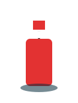
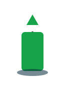
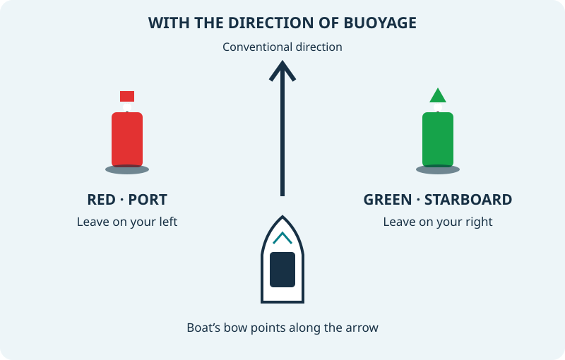

Port-hand mark
Red. Can-shaped, pillar or spar. Where fitted, the topmark is a single red cylinder (can). If lit, its light is red.
With the direction of buoyage, leave it on your port side.
Red or green? Start with the direction of buoyage, then recognise the marks on each side of the channel.
Lateral marks identify the sides of a channel in relation to the conventional direction of buoyage. This is often the direction taken when approaching a harbour or river from seaward, but it is set by the authority and must be checked on the chart.
This lesson covers IALA Region A, used around the UK. Port is the boat’s left side and starboard is its right side when you face forward towards the bow.

Red. Can-shaped, pillar or spar. Where fitted, the topmark is a single red cylinder (can). If lit, its light is red.
With the direction of buoyage, leave it on your port side.

Green. Conical, pillar or spar. Where fitted, the topmark is a single green cone, point upwards. If lit, its light is green.
With the direction of buoyage, leave it on your starboard side.

Use the colour together with the shape or topmark, charted position and, at night, the light characteristic. Ordinary lateral marks do not all share one flash pattern. The composite group rhythm (2+1) is reserved for preferred-channel marks.
Region B reverses the lateral colours. That is why “red right returning” is not the rule for this Region A example. Identifying a buoy does not establish that the surrounding water has enough depth for your boat.
Choose an answer, then check it. If it needs another look, try again.
Loading practice questions…
Continue into Bridge Watchkeeping to study lateral, cardinal, isolated danger, safe water and other marks, with day and night recognition practice.
Explore watchkeeping training →Open the training hubReference: IALA R1001 Maritime Buoyage System, sections 2.1–2.4, hosted by Irish Lights. Independent recreational learning and practice.